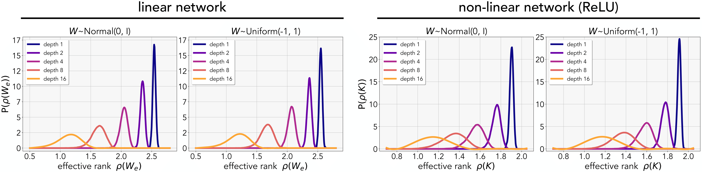
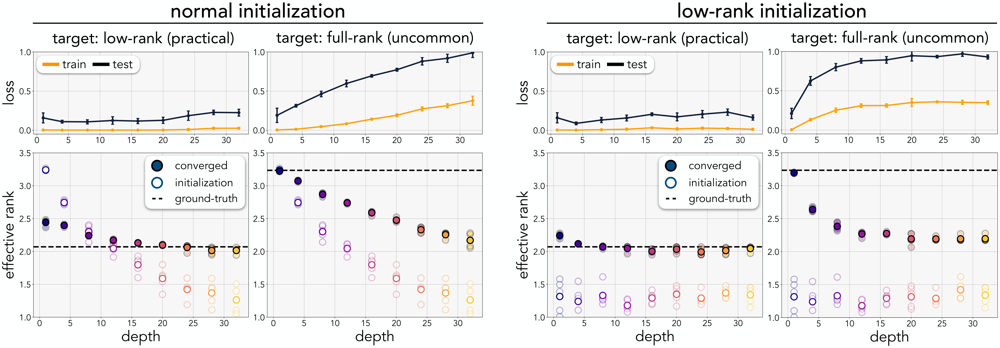
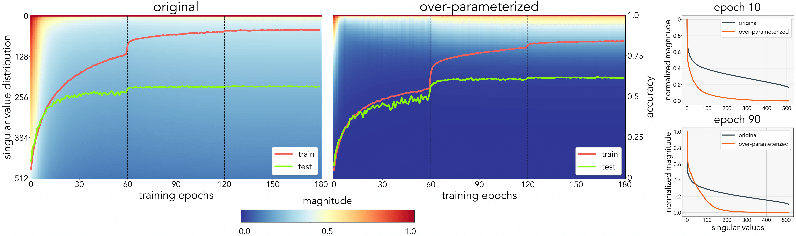

|
|
|
|
|
|
|
|
|
|
|
|
|
|
|
Code [GitHub] |
Paper [arXiv] |
Cite [BibTeX] |
Insight 1: The volume of low-rank functions induced by the network parameters increase as a function of the number of layers.
There exists more probability mass for lower-rank rank solutions when adding more layers. The effective rank is computed on the effective weights for linear networks, and on the kernel for non-linear networks.

Insight 2: The parameterization of the network ultimately determine which solution the model will converge to.
In low-rank under-determined regime, models with the same training error results in different test-error. Too shallow or too deep networks perfroms sub-optimally. On the contrary, if the underlying solution is full-rank, deep models fail to converge.

Insight 3: Linear over-parameterization of non-linear networks can be used as an implict rank regularizer without increasing the modeling capacity, improving generalization performance thereby.
Singular values of a CNN for both original (left) and linearly over-parameterized (right) model throughout training. The model is over-parameterized by a factor of 4. The over-parameterized model exhibits less overfitting, with lower training accuracy and higher testing accuracy.

>>> git clone https://github.com/minyoungg/overparam-layers
>>> cd overparam-layers
>>> pip install .
from overparam import OverparamLinear, OverparamConv2d
# over-parameterized nn.Linear layer
layer = OverparamLinear(32, 32, depth=4)
# over-parameterized nn.Conv2d layer (3 layers with 3x3, 3x3, 1x1 kernels)
layer = OverparamConv2d(32, 64, kernel_sizes=(3, 3, 1), stride=1, padding=1)
import torchvision.models as models
from overparam.utils import overparameterize
model = models.alexnet()
model = overparameterize(model, depth=2)
We would like to thank Anurag Ajay, Lucy Chai, Tongzhou Wang, and Yen-Chen Lin for reading over the manuscript and Jeffrey Pennington and Alexei A. Efros for fruitful discussions.
Minyoung Huh is funded by DARPA Machine Common Sense and MIT STL. Brian Cheung is funded by an MIT BCS Fellowship.
This research was also partly sponsored by the United States Air Force Research Laboratory and the United States Air Force Artificial Intelligence Accelerator and was accomplished under Cooperative Agreement Number FA8750-19-2-1000.
The views and conclusions contained in this document are those of the authors and should not be interpreted as representing the official policies, either expressed or implied, of the United States Air Force or the U.S. Government.
The U.S. Government is authorized to reproduce and distribute reprints for Government purposes, notwithstanding any copyright notation herein.
Website template edited from Colorful Colorization.